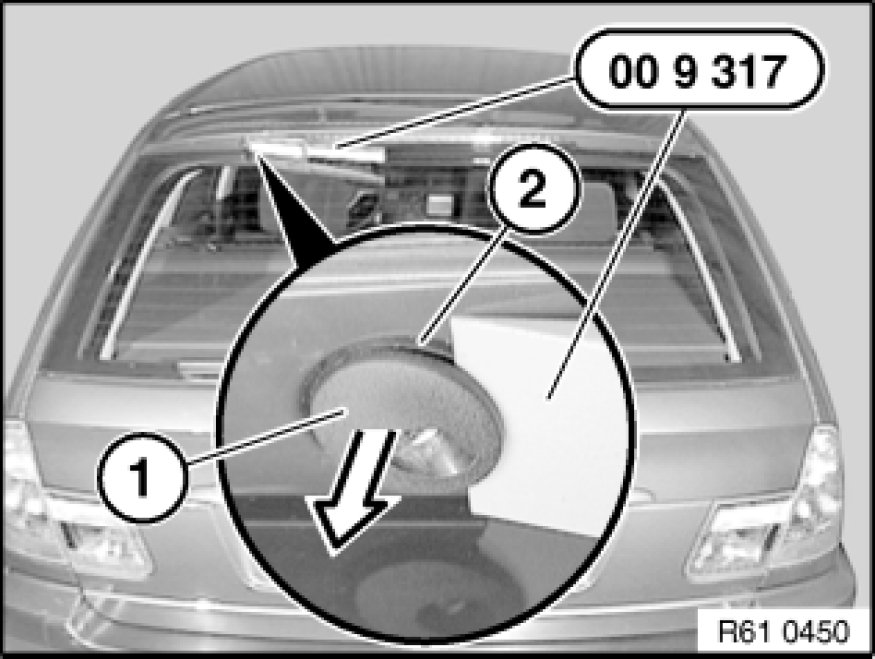
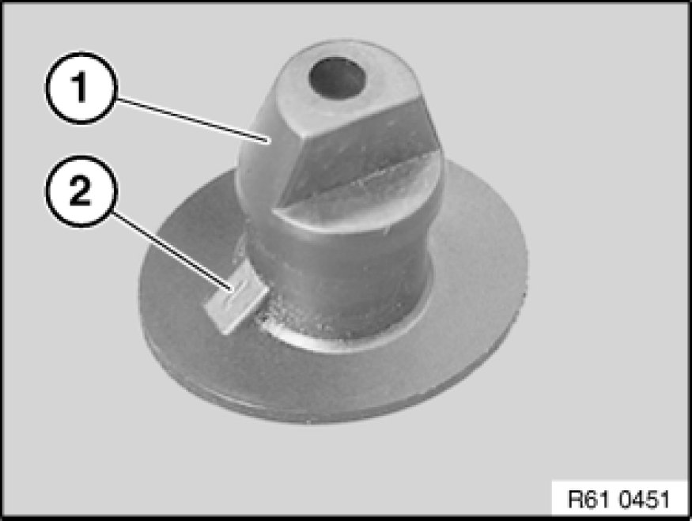

Removing and Installing/Replacing Spray Nozzle for Rear Window Wiper
61 62 110 - Removing and installing/replacing spray nozzle for rear window wiper

Special tools required:
- 00 9 317 00 9 317 Trim Panel Wedge

Lever spray nozzle for rear window wiper (1) with special tool 00 9 317 00 9 317 Trim Panel Wedge out of spray nozzle holder (2).

Installation:
Make sure turning lock (2) of spray nozzle for rear window wiper (1) is correctly seated in spray nozzle holder.
Adjust spray nozzle Adjustments.